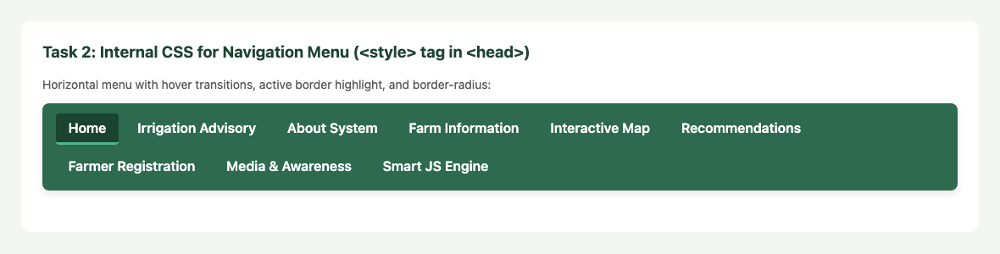
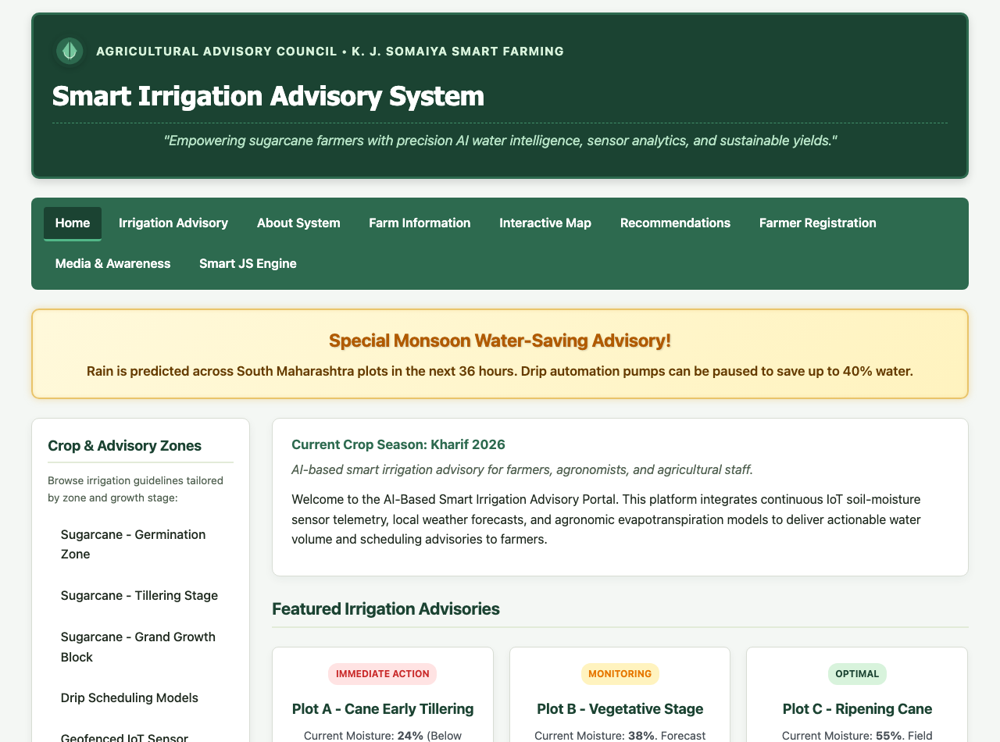
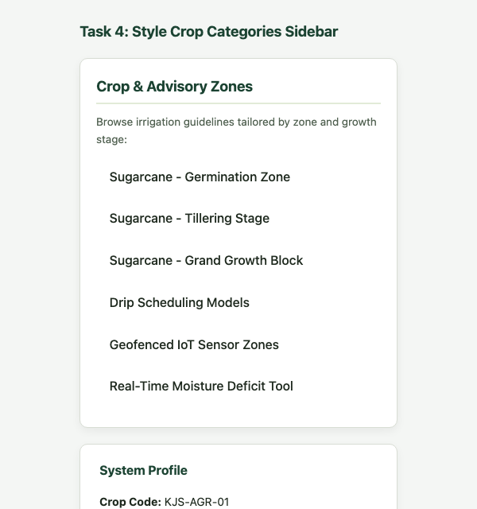
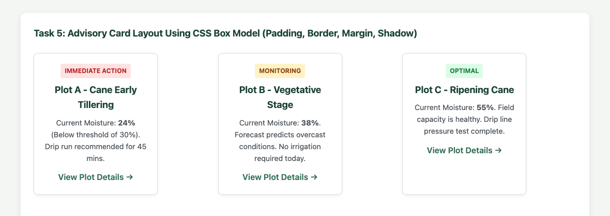
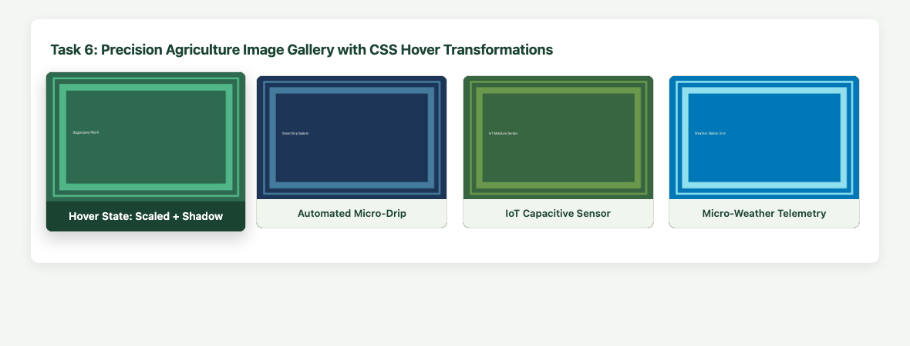
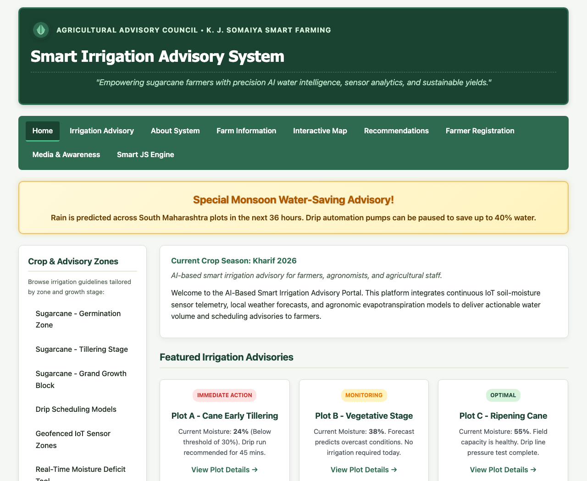
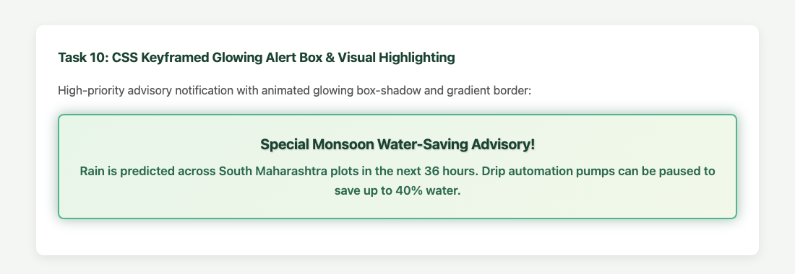

| Exp. No: | 2 | Roll No: | 16010125138 |
| Name: | Pranav Mendon | Batch: | B3 |
| Branch: | Computer Engineering | Semester: | IV |
| Subject: | Web Development Lab | Date of Perf: | 29 / 07 / 2026 |
2. Design responsive layouts using Flexbox, CSS Grid, and media queries.
3. Enhance user interaction using CSS3 animations, transforms, and transitions.
4. Maintain clean separation of content and presentation across all web portal modules.
2. W3Schools – CSS3 Tutorial and Responsive Design Guide, Refsnes Data, 2026.
3. E. A. Meyer and S. Weyl, Cascading Style Sheets: The Definitive Guide, 4th ed., O'Reilly Media, 2018.
Expected Output / Screenshots (Task-Wise):










1. Use Bootstrap for CSS. Compare Vanilla CSS with Bootstrap framework.
• Grid Architecture: Vanilla CSS utilizes native CSS Grid and Flexbox with complete control over sizing. Bootstrap provides a 12-column responsive layout system using utility classes (.container, .row, .col-md-6).
• Bundle Weight & Performance: Custom Vanilla CSS in this project is ~4 KB, giving optimal load performance. Bootstrap requires an external library (~200 KB) unless purged.
• Customization: Vanilla CSS allows bespoke theme styling, while Bootstrap speeds up prototyping with pre-styled cards, modals, and navbars.
Experiment 2 successfully transformed the HTML5 portal into a modern, responsive web application using CSS3. Box model properties, multi-column flex layouts, zebra-striped tables, styled form controls with glowing focus rings, and keyframe animations were all systematically integrated.